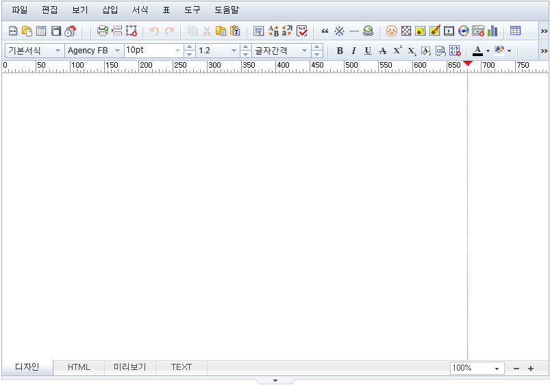
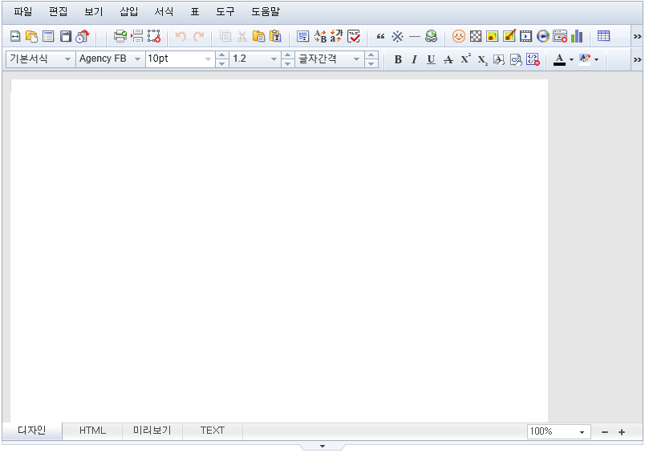

아래 사진은 눈금자 보기를 선택 시 나타나는 화면입니다.

아래 사진은 너비고정을 적용 시 나타나는 화면입니다.

Editor 화면을 전체/기본화면으로 전환을 합니다.
Editor가 편집 모드가 되도록 합니다.
Editor 편집 모드의 작업내용이 HTML로 보여집니다.
Editor에서 작업한 내용을 Browser로 미리보기 합니다.
Editor에서 작업한 내용 중 텍스트만 남기고 삭제합니다.